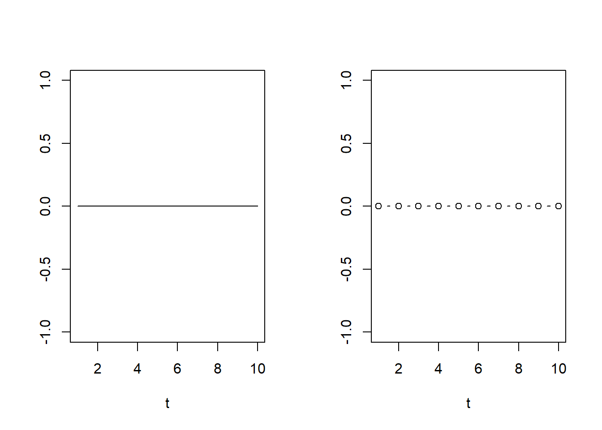

2 Tema 2: Probabilidades
2.1 Introducción
- Sumerios y Asirios utilizaban un hueso extraído del talón de animales como ovejas, ciervos o caballos, denominado astrágalo o talus, que tallaban para que pudieran caer en cuatro posiciones distintas, por lo que son considerados como los precursores de los dados.

- Por su parte, los juegos con dados se practicaron ininterrumpidamente desde los tiempos del Imperio Romano hasta el Renacimiento, aunque no se conoce apenas las reglas con las que jugaban.

- Uno de estos juegos, denominado “hazard”, palabra que en inglés y francés significa riesgo o peligro, fue introducido en Europa con la Tercera Cruzada. Las raíces etimológicas del término provienen de la palabra árabe “al-azar”, que significa “dado”. Posteriormente, en el “Purgatorio” de Dante el término aparece ya como “azar”.
La historia de la probabilidad comienza en el siglo XVII cuando Pierre Fermat y Blaise Pascal tratan de resolver algunos problemas relacionados con los juegos de azar. Aunque algunos marcan sus inicios cuando Cardano (jugador donde los haya) escribió sobre 1520 El Libro de los Juegos de Azar (aunque no fué publicado hasta más de un siglo después, sobre 1660) no es hasta dicha fecha que comienza a elaborarse una teoría aceptable sobre los juegos.

Pierre Fermat

Blaise Pascal
Durante el siglo XVIII, debido muy particularmente a la popularidad de los juegos de azar, el cálculo de probabilidades tuvo un notable desarrollo sobre la base de la anterior definición de probabilidad. Destacan en 1713 el teorema de Bernoulli y la distribución binomial, y en 1738 el primer caso particular estudiado por De Moivre, del teorema central del límite. En 1809 Gauss inició el estudio de la teoría de errores y en 1810 Laplace, que había considerado anteriormente el tema, completó el desarrollo de esta teoría. En 1812 Pierre Laplace publicó Théorie analytique des probabilités en el que expone un análisis matemático sobre los juegos de azar.

Daniel Bernoulli

Gauss

Pierre Laplace
2.2 Experimento Aleatorio
Definición de experimento: Proceso mediante el cual se obtiene un resultdo de una observación.
Definición de experimento aleatorio: Cuando los resultados de la observacion no s epuede predecir con exactitud antes de realizar el experimento.
2.2.1 Ejemplos
- Lanzar una moneda
- Lanzar un dado, lanzar un tetraedro
- Una competencia de 6 caballos, quien es el caballo ganador
- Un partido de futbol entre el equipo A y el equipo B
- El clima de mañana
- El resultado de una votación con 3 candidatos
- El tiempo de entrega de una pizza
- El tiempo de atención en la caja recaudadora de la universidad en un dia particular
2.3 Espacio Muestral
Definición de espacio muestral: Es la colección (conjunto) de todos los resultados posibles de un experimento aleatorio. Denotado por…
\[\Omega\]
2.3.1 Ejemplos
El espacio muestra de los anteriores ejemplos
- \(\Omega=\{Cara,Cruz\}\)
- \(\Omega=\{1,2,3,4,5,6\}\), para el tetraedro \(\Omega=\{1,2,3,4\}\)
- Sean los caballos a,b,c,d,e y f, \(\Omega=\{a,b,c,d,e,f\}\)
- \(\Omega=\{ganaA, ganaB, empate\}\)
- \(\Omega=\{soleado, lluvia,nublado \}\)
- Sean los candidatos x, y, z \(\Omega=\{x,y,z\}\)
- Sea \(x\) el tiempo, \(\Omega=\{x > 0\}\) 7a. Sea \(x\) el tiempo en horas, \(\Omega=\{ 0<x<24 \}\)
- Sea \(x\) el tiempo en horas, \(\Omega=\{ 0<x<8 \}\)
Nota: el tamaño de \(\Omega\) lo denotaremos por:
\[\#\Omega\]
El espacio muestral de un experimento, puede ser:
- Finito numerables
- Infinito no numerables
- Infinito numerables + Los dias hasta que suceda un terremoto en la ciudad \(x\)
Ejemplo, sean los siguientes experimentos aleatorios:
El estado de animo de una persona. \(\Omega=\{feliz, triste, enojada, asustada, \ldots\}\) es finito
y es numerable. Donde \(\# \Omega=\) la cantidad de estados de animo que definamos estudiar.El número de veces necesario al lanzar una moneda hasta sacar cara. \(\Omega=\{1,2,3,4, \ldots, \infty \}\) es infinito y numerable. \(\# \Omega=\infty\).
Duración de un artefacto electrónico. \(\Omega=\{w\in IR, w \geq 0 \}\) es infinito y no numerable. \(\# \Omega=\infty\).
2.3.2 Otros ejemplos
- Exp: Lanzar dos dados y observar las caras superiores de ambos dados, \(\Omega= \{(1,1),(1,2),(1,3), (1,4),...,(6,6) \}\), \(\Omega= \{(i,j); i=1:6,j=1:6 \}\), \(\#\Omega=36\)
- El experimento: determinar el sexo de un niño/a recién nacido. \(\Omega=\{Femenino, Masculino\}\)
- En una competencia de caballos, con 7 caballos, el experimento: ordenar todas las posibles llegadas de estos 7 caballos. (a,b,c,d,e,f,g), \(\#\Omega=7!=5040\)
\[\Omega=\{\text{Todas las 7! permutaciones de } (a,b,c,d,e,f,g) \}\]
- El experimento es medir el tiempo de vida de un componente electrónico de un aparato (horas).
\[\Omega=\{x \in IR: x \geq 0 \}\]
par(mfrow=c(1,2))
plot(1:10,rep(0,10),type="l",xlab="t",ylab="")
plot(1:10,rep(0,10),type="b",xlab="t",ylab="")
- El experimento es: Seleccionar 3 personas de un grupo de 50 personas, describir el espacio muestral y el tamaño de este.
- \(\# \Omega= C_3^{50}=\binom{50}{3}=19600\)
- \(\Omega=\{(i,j,k); i,j,k \in 1:50, i\neq j \neq k \}\)
2.3.3 Ejercicios
- Cuatro profesores se distribuyen al azar en 4 oficinas numeradas del 1 al 4. Si los profesores pueden estar en la misma oficina. Describir \(\Omega\)
\[\#\Omega=4!+4+4\binom{4}{2}+\binom{4}{2}\binom{4}{3}+\binom{4}{2}\binom{4}{2}\]
- Se lanza una moneda y un dado simultaneamente. Describir \(\Omega\), \(\#\Omega=12\)
\[\Omega=\{(i,j); i=\{cruz,cara\},j=1:6 \}\]
- Cinco trabajadores, de los cuales 3 pertenecen a un grupo minoritario se asignan a 5 empleos netamente distintos. Describir \(\Omega\),
Ignorar al grupo minoritario, \(\# \Omega=5!\), sean los trabajdores a,b,c,d,e,f \(\Omega=\{5!; a,b,c,d,e\}\)
Solo con los 3 trabajadores minoritarios: Sea los trabajadores minoritarios \(a,b,c\) y numerámos los empleos de \(1:5\) \(\Omega=\{(a=i,b=j,c=k); i,j,k=1:5, i \neq j \neq k\}\), \(\# \Omega= CR_{5,3}=\binom{7}{3}=35\)
- Dos personas A y B se distribuyen al azar en tres oficinas numeradas 1,2 y 3 .Si las dos personas pueden estar en la misma oficina ,defina un espacio muestral adecuado
\[\Omega=\{(1A,1B),(2A,2B),(3A,3B),(1A,2B),(1A,3B),(2A,3B),(1B,2A),(1B,3A),(2B,3A) \}\] 5. En un profesor toma un examen con 5 preguntas de falso/verdadero, describa el espacio muestral asociado a este experimento aleatorio, relacionado a las respuestas del estudiante.
Resp. \(\# \Omega=2*2*2*2*2=2^5=32\), \(\Omega=\{(VVVVV),(VFVFV),\ldots,(FFFFF)\}\)
- En un profesor toma un examen con 5 preguntas de opción múltiple (5 opciones por pregunta, con una sola opción correcta), describa el espacio muestral asociado a este experimento aleatorio, relacionado a las respuestas del estudiante.
Resp. $# =55555=5^5=3125 $, Supongamos que las alternativas en las opciones son \((a,b,c,d,e)\) \(\Omega=\{(aaaaa),(aaaab),\ldots ,(eeeee)\}\)
2.4 Eventos (E)
Sea \(E\) un evento, este se define como:
\[E \subset \Omega\]
2.4.1 Ejemplos
En el ejemplo del nacimiento de niños/as, el experimento trataba de determinar el sexo del niño/a. Sea el evento \(E\) nace una niña, \(E=\{Femenino \}\), otro evento puede ser \(E2=\{masculino\}\)
Sea el experimento lanzar un dado (de 6 caras). Sean los eventos
- \(A\) el resultado es par. \(A=\{2,4,6 \}\)
- \(B\) el resultado es mayor a 5. \(B=\{6\}\)
- \(C\) el resultado es un número primo. \(C=\{1,2,3,5\}\), \(C=\{2,3,5\}\)
- \(D\) el resultado es mayor a 6. \(D=\emptyset\)
- \(E\) el resultado mayor a 0. \(E=\Omega\)
Nota: recordar que \(\emptyset \subset \Omega\), \(\Omega \subset \Omega\).
- En una competencia de caballos, con 7 caballos, el experimento: ordenar todas las posibles llegadas de estos 7 caballos. \((a,b,c,d,e,f,g)\). Sea el evento \(E\) el caballo \(c\) gana la competencia, describa el evento o el tamaño de este evento.
Recordar que \(\# \Omega= 7!\)
\[\# E = 1 * 6*5*4*3*2*1=6!= 720\]
\[E = \{(c,a,b,d,e,f,g),(c,a,b,d,e,g,f),(c,f,b,d,e,a,g),\ldots \}\]
\[E = \{ \text{Son las permutaciones de 6! de tal forma que c es primero: } (a,b,d,e,f,g) \}\]
- Se lanza dos dados y se suman ambas caras. Defina los eventos:
\[\Omega=\{2,3,4,5,6,7,8,9,10,11,12 \}\]
- la suma es par, \(A=\{2,4,6,8,10,12 \}\)
- la suma es múltiplo de 7 \(B=\{7\}\)
- la suma es 1, \(C=\{\emptyset\}\)
- En el ejemplo del componente electrónico, sea el evento \(E\) el componente dura al menos 5 horas.
\[E=\{x: x\geq 5 \}\]
- En el ejemplo del componente electrónico, sea el evento \(E\) el componente dura a lo sumo 5 horas.
\[E=\{x: x\leq 5 \}\] 7. Una pareja inicia la planificación familiar, ellos quieren tener 4 hijos/as. Esta pareja esta interesada en los siguientes eventos:
- \(A:\) todos del mismo sexo
- \(B:\) exactamente un varón
- \(C:\) Por lo menos dos varones
- \(D:\) exactamente 1 mujer
Listar los elementos vinculados a estos eventos.
Solución,
El experimento aleatorio es: el sexo de los 4 hijos/hijas de esta pareja \((h1,h2,h3,h4)\). \(\# \Omega= 2*2*2*2=16\)
El espacio muestral es \(\Omega:\)
(mmmh) | (hhmm) | (mhhm) | (hmhm) |
(mhmh) | (hmmh) | (mmhh) | (hhhm) |
(hhmh) | (hmhh) | (mhhh) | (hhhh) |
Ahora sobre los eventos:
- \(A=\{(mmmm),(hhhh) \}\), \(\# A=2\)
- \(B=\{(hmmm),(mhmm),(mmhm),(mmmh) \}\), \(\# B=4\)
- \(C=\{ (hhmm),(mhhm),(hmhm),(mhmh),(hmmh),(mmhh),(hhhm),(hhmh),(hmhh),(mhhh),(hhhh)\}\), \(\# C= 11\)
- \(D=\{ (hhhm),(hhmh),(hmhh),(mhhh)\}\)
2.4.2 Evento simple
Un evento simple, es el elemento más pequeño (suelto) dentro de otro evento. También, un evento simple tiene correspondencia única con los posibles resultados de \(\Omega\).
Sea \(\Omega=\{w_1,w_2,\ldots,w_i,\ldots\}\), los resultados \(w_i\) son conocidos como los eventos simple. En el fondo un evento es la colección de algunos eventos simples, según la definición del evento
2.4.3 Operaciones con los eventos
Sean \(A\), \(B\) y \(C\) eventos.
Eventos simples: son eventos que contienen un solo elemento, tienen correspondencia con los resultados del espacio muestral. Sea \(w\) un evento simple de un \(\Omega\) “numerable”.
Evento vacio \(\emptyset\)
El complemento de un evento
\[A^c=\{ w \in \Omega \wedge w\notin A\}\]
- La unión de eventos
\[A \cup B = \{w \in \Omega: w \in A \text{ ó } w\in B \}\]
- La intersección de eventos
\[A \cap B= \{w \in \Omega: w \in A \wedge w \in B \}\]
- Dos eventos son mutuamente excluyentes (No tienen elementos en común) si:
\[A \cap B = \emptyset\] * Inclusión de eventos
\[A \subset B =\{w \in \Omega : w \in A \rightarrow w \in B \}\]
Ejemplo: En el lanzamiento de 2 dados y la suma de sus resultados, sean los eventos
\(A:\) La suma es par
\(B:\) La suma es impar
\(C:\) La suma es un número primo
\(D:\) La suma es mayor a 3
Describir los eventos y luego encontrar
- $A C={2,3,4,5,6,7,8,10,11,12} $
- \(B \cap D=\{5,7,9,11 \}\)
- \(C \cup D^c= D^c \subset C= C\)
- \(A \cap (B\cup C )=\)
- \(A \cup (B\cap C)=\)
El espacio muestral \(\Omega=\{2,3,4,5,6,7,8,9,10,11,12\}\)
Los eventos
\(A=\{2,4,6,8,10,12\}\)
\(B=\{3,5,7,9,11 \}\)
\(C=\{2,3,5,7,11 \}\)
\(D=\{4,5,6,7,8,9,10,11,12\}\)
\(D^C=\{2,3\}\)
\(C \subset B\), entonces \(C\cup B=B\), \(C \cap B=C\)
2.4.4 Algunas propiedades sobre las operaciones en eventos
Sean \(A\), \(B\), \(C\) y \(D\) eventos,
\(A \cup B= B \cup A\), \(A \cap B= B \cap A\) Conmutativa
\((A \cup B) \cup C= A \cup (B \cup C)\) , \((A \cap B) \cap C= A \cap (B \cap C)\) Asociativa
\(A \cup (B \cap C)= (A \cup B) \cap (A \cup C)\) Distributiva
$A (B C)=(AB) (AC) $ Distributiva
\((A \cup B)^c= A^c \cap B^c\)
\((A \cap B)^c= A^c \cup B^c\)
Ley de Morgan, sea \(E_1, E_2, E_3, \ldots, E_n\), \(n\) eventos de algun experimento aleatorio
\[ (\cup_{i=1}^{n}\{E_i\})^c = \cap_{i=1}^{n}\{E_i ^c\}\]
\[ (\cap_{i=1}^{n}\{E_i\})^c = \cup_{i=1}^{n}\{E_i ^c\}\]
- \((A^c)^c=A\)
2.4.5 Algebra de Eventos
Definición: Sea \(A\) un evento, Sea \(\Sigma\) una clase de subconjuntos de \(\Omega\)
Esta es un algebra de eventos si:
- \(\Omega \in \Sigma\)
- Si \(A\in \Sigma\Rightarrow A^C \in \Sigma\)
- Si \(A,B \in \Sigma \Rightarrow A \cup B \in \Sigma\)
Ejemplo: El experimento es lanzar un dado y observar el resultado de la cara \(\Omega=\{1,2,3,4,5,6\}\), \(\# \Omega=6\), \(\Omega \cup \emptyset=\Omega\)
\[\Sigma=\{\Omega,\emptyset \}\] Sera que la siguiente clase es un algebra de eventos:
\[\Sigma=\{\Omega, \emptyset, 1, (2,3,4,5,6) \}\]
\[\Sigma=\{\Omega, \emptyset, 1, (2,3,4,5,6), 2, (1,3,4,5,6),(1,2),(3,4,5,6) \}\]
Nota: El algebra de eventos no es único
Definición: Se dice que \(\Sigma\) es un \(\sigma-algebra\)
- \(\Omega \in \Sigma\)
- Si \(A\in \Sigma\Rightarrow A^C \in \Sigma\)
- Si \(A_i \in \Sigma\) para \(i=1,2, \ldots\) \(\Rightarrow \cup_{i=1}^\infty A_i \in \Sigma\)
Ejemplo: El experimento es lanzar un dado y observar el resultado de la cara \(\Omega=\{1,2,3,4,5,6\}\), \(\# \Omega=6\), \(\Omega \cup \emptyset=\Omega\)
\[\Sigma=\{\Omega,\emptyset \}\]
\[\Sigma=\{\Omega,\emptyset,1,(2,3,4,5,6) \}\]
Existe un \(\sigma -algebra\) que contiene todas las combinaciones posibles contiene en particular todos los eventos simples de \(\Omega\).
\[\Sigma=\{\Omega,\emptyset,1,2,3,4,5,6,(2,3,4,5,6),(1,3,4,5,6),(1,2,4,5,6),(1,2,3,5,6),(1,2,3,4,6),(1,2,3,4,5),(1,2),(1,3),...,(1,2,3),(1,2,4),...(1,2,3,4),(1,2,3,5),...\}\] \[\#\Sigma=2^{\# \Omega}\]
\[\#\Sigma=2^6=64\]
- Ejemplo al lanzar una moneda dos veces y observar los resultados \(\Omega=\{CC,SC,CS,SS\}\) si armamos un \(\sigma-algebra\) donde incluyamos todos los eventos simples, entonces, \(\#\Sigma=2^4=16\).
\[\Sigma=\{\Omega,\emptyset,CC,SC,CS,SS,(CC,SC),(CC,CS),(CC,SS),(SC,CS),(SC,SS),(CS,SS),(CC,SC,CS),(CC,SC,SS),(CC,CS,SS),(SC,CS,SS)\}\]
2.5 Probabilidad
Medida de incertidumbre entre 0 y 1 asociado a un experimento aleatorio
- Probabilidad teórica: (asume que los eventos simples son igualmente probables) los casos posibles sobre los casos totales
\[P(A)= \frac{\text{Casos posibles}}{\text{Casos totales}}=\frac{\#A}{\# \Omega}\]
Ejemplo: El lanzamiento de un dado, \(\Omega=\{1,2,3,4,5,6\}\), si el evento es \(A=6\), \(B=PAR\)
\(P(A)=\frac{1}{6}\), \(P(B)=\frac{3}{6}=1/2\)
- Probabilidad frecuentista:
\[P(A)=lim_{n \rightarrow \infty} \frac{n(A)}{n} =lim_{n \rightarrow \infty} \frac{\# A_n}{n}\]
## [1] 0 1 0 1 1 0 1 0 0 1 0 1 0 1 0 1 0 1 0 0 1 1 1 0 1 1 1 1 1 0
## [31] 0 0 1 1 1 1 1 1 0 0 0 1 1 0 0 0 1 0 0 0 1 1 0 1 0 1 0 1 0 1
## [61] 1 1 1 1 1 0 1 1 0 0 0 0 0 0 1 0 1 0 0 0 0 1 1 0 0 0 0 1 1 0
## [91] 1 0 0 1 1 0 1 1 0 1 0 1 0 1 1 0 1 0 0 1 1 0 1 0 0 1 1 0 0 1
## [121] 0 1 1 0 1 1 1 1 0 0 0 0 0 0 0 0 0 0 1 0 0 0 0 1 1 1 0 0 1 0
## [151] 1 1 1 1 0 1 1 0 0 1 0 0 1 0 0 0 1 1 0 0 0 0 1 0 0 0 1 1 1 0
## [181] 1 0 1 1 0 0 1 0 0 1 1 1 0 0 0 0 0 1 1 0 0 0 1 1 0 1 0 0 1 1
## [211] 0 1 1 0 1 1 0 0 0 0 0 0 0 1 0 1 0 0 0 1 0 1 1 1 1 0 0 1 1 0
## [241] 0 0 1 1 0 0 0 0 1 0 1 0 1 1 1 1 1 0 1 0 0 0 0 1 1 0 0 0 0 1
## [271] 1 1 0 1 0 1 0 1 1 0 0 1 1 1 0 0 1 0 1 0 0 1 1 1 1 0 0 0 1 0
## [301] 1 0 1 1 1 1 1 1 1 0 0 0 0 0 1 1 1 0 0 0 1 1 1 0 0 1 0 1 0 1
## [331] 1 0 1 0 1 0 0 1 0 1 0 0 0 1 1 1 1 0 1 1 0 0 0 1 1 0 0 1 1 0
## [361] 0 0 1 1 1 0 1 0 0 1 1 0 0 1 0 0 1 0 0 1 0 0 1 0 0 1 0 1 0 0
## [391] 1 0 1 1 0 1 0 0 1 1 0 0 1 0 1 0 1 1 1 0 1 1 1 0 0 0 1 1 0 0
## [421] 1 1 0 1 1 1 0 0 0 1 1 0 0 0 1 1 0 1 1 0 1 0 0 0 0 1 0 1 1 1
## [451] 0 1 1 1 1 0 0 1 1 1 1 1 1 0 1 1 1 0 0 0 1 0 0 1 1 1 0 0 0 0
## [481] 0 0 1 1 1 0 1 1 1 1 0 0 1 1 1 1 0 1 0 0 1 0 1 0 0 1 0 0 1 1
## [511] 0 1 1 1 0 0 0 1 0 1 0 1 0 0 1 0 0 1 0 1 0 1 0 1 0 1 1 1 0 1
## [541] 1 1 0 1 0 1 0 1 1 0 1 1 1 0 1 0 1 0 1 0 0 1 1 1 0 1 0 0 0 1
## [571] 1 0 0 1 0 0 0 1 0 0 0 1 1 0 1 0 0 0 1 1 1 0 0 1 1 0 1 1 0 1
## [601] 1 0 0 1 1 0 1 0 1 0 0 1 1 1 1 1 1 0 1 0 0 1 0 0 0 1 1 0 1 1
## [631] 1 0 0 1 0 0 1 0 1 0 0 1 1 1 0 1 0 0 1 1 0 0 1 0 0 1 1 1 0 1
## [661] 0 0 0 0 0 1 1 0 0 0 1 0 1 0 0 1 0 1 1 1 1 1 1 0 1 0 1 1 1 0
## [691] 0 1 0 0 0 0 0 0 0 1 1 1 0 1 1 0 0 1 1 1 0 1 1 1 0 1 1 1 1 1
## [721] 1 1 1 1 1 1 0 0 1 0 0 1 1 0 1 1 0 1 0 1 0 0 1 0 0 1 0 1 1 0
## [751] 1 1 0 0 0 0 1 0 1 0 1 1 0 0 1 1 0 0 1 1 0 1 1 1 1 0 0 0 0 1
## [781] 0 1 0 0 0 1 0 0 0 1 0 0 0 1 0 0 0 1 0 1 1 0 1 1 1 0 1 1 0 1
## [811] 0 0 0 1 0 1 1 1 1 0 0 0 1 1 1 1 1 0 0 1 1 0 1 0 0 1 1 0 1 0
## [841] 1 0 0 1 1 1 0 0 0 0 0 1 0 0 0 0 1 1 0 0 1 0 1 1 0 1 0 1 0 0
## [871] 1 0 0 0 0 0 0 1 0 1 0 0 1 1 0 1 0 1 0 1 1 1 0 1 0 1 1 0 1 0
## [901] 1 0 1 0 0 0 0 0 1 0 0 1 1 1 0 0 0 1 0 1 0 0 0 1 0 1 0 1 0 0
## [931] 1 1 0 1 1 0 1 0 0 0 0 0 1 0 0 0 1 0 1 1 1 1 0 0 1 0 0 0 1 1
## [961] 0 0 0 0 1 1 1 1 0 1 0 0 0 1 0 1 1 1 1 0 1 1 1 0 0 1 0 1 1 0
## [991] 0 0 1 1 1 0 1 0 1 1## [1] 496\(P(escudo)=\frac{496}{1000}=0.496\)
- Probabilidad subjetiva (experiencia) (apriori)
\[P(escudo)=1/3\]
\[P(llueva_{hoy})=0.99\]
2.5.1 Probabilidad de un evento
Definición: Una medida de probabilidad \(P\) es una función, tal que:
\[ P:\begin{array} && \Sigma & \rightarrow & [0,1]\\ & \downarrow & & \downarrow \\ & A & \rightarrow & P(A) \end{array} \]
2.5.2 Axíomas básicos de la probabilidad
- \(P(A) \in [0,1]\), \(0 \leq P(A) \leq 1\), Para todo \(A\in \Sigma\), \(A\in\Omega\)
- \(P(\Omega)=1\)
- Axioma aditividad finita, Si \(A_1,A_2, \ldots,A_n \in \Sigma\), Estos son eventos disjuntos 2 a 2 (mutuamente excluyentes). \(A_i \cap A_j=\emptyset\) para todo \(i\neq j\)
\[P(\cup_{i=1}^n{A_i})=\sum_{i=1}^n{P(A_i)}\]
Observación: Si \(A \cap B=\emptyset\) entonces, \(P(A\cup B)=P(A)+P(B)\)
Ejemplo,
En el lanzamiento de un dado, sean los eventos, A=sale Par, B=Sale Impar. Calcular la probabilidad de \(P(A\cup B)\).
\(A=\{2,4, 6\}\), \(B=\{1,3,5\}\), Notar que \(A \cap B= \emptyset\).
Por el axioma 2. \[P(A \cup B)=P(\Omega)=1\] Por el axioma 3.
\[P(A \cup B)=P(A)+P(B)=\frac{3}{6}+\frac{3}{6}=1\]
2.5.3 Propiedades
- \(P(\emptyset)=0\)
Demostración: sea \(A\) un evento,
- \(A\cap \emptyset=\emptyset\)
- \(A=A\cup \emptyset\)
\[P(A)=P(A\cup \emptyset)=P(A)+P(\emptyset)\] \[P(A)=P(A)+P(\emptyset)\] \[P(\emptyset)=0\]
- \(P(A^c)=1-P(A)\)
- \(A\cap A^c=\emptyset\), entonces son eventos disjuntos
- \(A \cup A^c= \Omega\), entonces, \(P(A\cup A^c)=P(\Omega)=1\) Ax2.
\[1=P(\Omega)=P(A \cup A^c)=P(A)+P(A^c)\]
Así,
\[P(A^c)=1-P(A)\]
Ejercicios, demostrar:
- \(P(A \cup B)=P(A)+P(B)-P(A\cap B)\), para cualesquiera eventos \(A\), \(B\)
2.5.4 Espacios equiprobables
Sea \(\Omega\) un espacio muestral finito de tamaño \(n\),
\[\Omega=\{w_1,w_2,\ldots,w_n\}\]
Definición: Es una función que asigna las mismas probabilidades a todos los resultados del espacio muestral, es decir, todos los eventos simples tienen la misma probabilidad de ocurrencia.
\[P(w_1)=P(w_2)=\ldots=P(w_n)=\frac{1}{n}\]
Nota, tener en cuenta que \(w_i \cap w_j=\emptyset\) para \(i\neq j\) dado que los \(w_i\) son eventos simples
\[P(w_1 \cup w_2\cup \ldots \cup w_n)=P(\Omega)=1\]
\[P(w_1 \cup w_2\cup \ldots \cup w_n)=P(w_1)+P(w_2)+\ldots+P(w_n)=1\]
Ejemplo, el lanzamiento de un dado legal genera un espacio muestral equiprobable. \(\Omega=\{1,2,3,4,5,6\}\), \(P(1)=P(2)=\ldots=P(6)=\frac{1}{6}\)
Ejemplo 1.
En un hipódromo 4 caballos, \(A\),\(B\),\(C\) y \(D\) compiten. Suponiendo que todos los caballos tienen la misma probabilidad de ganar (espacio equiprobable), calcular:
- Probabilidad que gane el caballo \(A\).
Resp. \(P(ganaA)=1/4\)
- Probabilidad que gane el caballo \(A\) o el caballo \(D\).
Resp. el evento de interés es \(ganaA \cup ganaD\), notar que \(ganarA \cap ganaD=\emptyset\)
\[P(ganaA\cup ganaD)=P(ganaA)+P(ganaD)=1/4+1/4=1/2\]
Ejemplo 2.
Tomemos ahora lo siguiente: \(A\) tiene 2 veces más probabilidades de ganar que \(B\); \(B\) tiene 2 veces más probabilidad de ganar que \(C\) y \(C\) tiene 2 veces más probabilidades de ganar que \(D\). (espacio no equiprobable)
- Probabilidad que gane el caballo \(A\)
- Probabilidad que gane el caballo \(A\) o el caballo \(D\).
Sean los eventos simples, \(w_1=gA=GanaA\), \(w_2=gB=GanaB\), \(w_3=gC=GanaC\) y \(w_4=gD=GanaD\)
Sabemos que: \(P(gA)=2*P(gB)=2*2*P(gC)=2*2*2*P(gD)=8*P(gD)\)
\[P(gA)+P(gB)+P(gC)+P(gD)=1\]
\[8*P(gD)+4*P(gD)+2*P(gD)+P(gD)=1\]
\[P(gD)(8+4+2+1)=1\] \[P(gD)=\frac{1}{15}\]
Asi, \(P(gD)=1/15\), \(P(gC)=2/15\), \(P(gB)=4/15\), \(P(gA)=8/15\)
- \(P(gA)=8/15\)
- \(P(gA\cup gD)=P(gA)+P(gD)=8/15+1/15=9/15\)
Ejemplo. Se lanza un par de dados legales simultaneamente, encontrar las probabilidades:
- La suma sea menor que 4
- La suma sea 9
- El resultado del primer dado sea mayor que el segundo
\(\#\Omega=36\), \(P(d1=i,d2=j)=1/36\) para \(i,j=1:6\)
Resp. \[P((1,1)\cup (1,2)\cup (2,1))=P(1,1)+P(1,2)+P(2,1)=1/36+1/36,1/36=3/36=1/12\]
Resp.
\[P(suma=9)=\frac{4}{36}\]
- Resp.
\[P(d1>d2)=\frac{15}{36}=\frac{5}{12}\]
Ejercicio (7, pg243). Un lote continene 10 piezas buenas, 4 con defectos menores y 2 con defectos mayores. Se extraen 2 piezas al azar. Calcular:
1. Calcular el tamaño del espacio muestral $\#\Omega=\binom{16}{2}=120$ 2. Probabilidad que ambas sean perfectas
\[P(2perf)=\frac{\binom{10}{2}}{\binom{16}{2}}=\frac{45}{120}=\frac{15}{40}=\frac{3}{8}\]
3. Probabilidad que por lo menos una sea perfecta
\[P(1perf \cup 2perf)=P(1perf)+P(2perf)=\frac{\binom{10}{1}\binom{6}{1}}{\binom{16}{2}}+\frac{3}{8}=\frac{60}{120}+\frac{3}{8}=\frac{1}{2}+\frac{3}{8}=\frac{7}{8}\]
4. Probabilidad que ninguna tenga un defecto mayorjihj
5. Probabilidad que ninguna sea perfecta
- Ejercicio (14, pg-244). Sea un dado, tal que la probabilidad de las distintas caras es proporcional al número de puntos inscritos en ellos. Hallar la probabilidad de obtener con este dado, un número par.
\[\Omega=\{1,2,3,4,5,6\}\]
## [1] 0.5714286\[P(2,4,6)=P(2 \cup 4 \cup 6 )=P(2)+P(4)+P(6)=0.095+0.19+0.286=0.571\]
- Ejercicio (11, pg-244). Sea \(\Omega=\{x \in Z/ 1 \leq x \leq 200 \}\), donde \(Z\) es el conjunto de los números enteros. Encuentre las probabilidades de los siguiente eventos. + \(A=\{x \in \Omega / x \text{ es divisible por }7 \}\) + \(B=\{x \in \Omega / x=3n+10, n\in Z^+ \}\) + \(C=\{x \in \Omega / x^2+1\leq 375 \}\)
Para \(P(A)\)
## [1] 28\[P(A)=\frac{\# A}{\# \Omega}=\frac{28}{200}=0.14\]
Para \(P(B)\)
## [1] 63\[P(B)=\frac{\# B}{\# \Omega}=\frac{63}{200}=0.315\]
\[P(C)=\frac{\# C}{\# \Omega}=\frac{19}{200}=0.095\]
2.6 Probabilidad Condicional
- Evaluamos dos eventos o más
- Conocer como se altera o cambia la probabilidad de un evento a partir de la ocurrencia de otro
Ejemplo con las notas de una materia.
Sea el experimento la nota de que obtiene un estudiante al inscribirse en una materia. Sea el evento A: el estudiante aprueba la materia. ¿Cuál es el probabilidad de A (suponiendo un espacio muestral equiprobable)?
- \(\Omega=\{0,1,2,\ldots,100 \}\), \(\# \Omega= 101\), \(P(i)=\frac{1}{101}\)
- \(P(A)=P(51\cup 52 \cup \ldots \cup 100)=P(51)+P(52)+\ldots+P(100)=\frac{50}{101}=0.495\)
- \(P(A^c)=1-P(A)=1-\frac{50}{101}=\frac{51}{101}=0.505\)
Sea el evento B= el estudiante dio 2 parciales cada uno con un valor de 30, obteniendo el estudiante una nota sumada de los 2 de 27 puntos. ¿Cuál sera ahora la probabilidad de que el estudiante apruebe la materia?
Podemos notar que la ocurrencia de \(B\) esta alterando el experimento y por ende la probabilidad de aprobar. Pensando en esto, ¿cómo se altera el espacio muestral?
- \(\Omega_{ocurrioB}=\{27,28,29,\ldots, 67\}\), \(\#Omega=41\)
- \(P(A/B)=\frac{17}{41}=0.415\)
Ejemplos.
- ¿Cuál es la probabilidad de aprobar la materia X dado que se tiene una nota de 20/30 en el primer parcial?
- Se lanza una moneda y después se lanza un dado , ¿Cuál es la probabilidad de obtener un 5 en el dado, si salió cara en la moneda?
- Una urna contiene 3 bolas rojas y 3 bolas blancas, se realiza una selección de 2 bolas de manera consecutiva y sin reemplazo ¿Cuál es la probabilidad de que la segunda bola sea roja, sabiendo que la primera bola fue blanca?
Definición: Sean dos eventos \(A\) y \(B\), tal que \(P(B)>0\), la probabilidad condicional de que ocurra el evento \(A\), dado que ha ocurrido el evento \(B\), se define por:
\[P(A/B)=\frac{P(A \cap B)}{P(B)}\]
Nota: Cualquier condición que se de entre las probabilidades, afecta directamente el espacio muestral, esto depende de la relación entre los eventos.
Ejemplo:
En la carrera de Informática van a existir elecciones para el director de carrera, existen 3 frentes y estos son \(A\), \(B\), \(C\), la carrera esta compuesta por 3 grupos de estudiantes, los políticos, los académicos y el resto, la estructura de votación según un sondeo aleatorio a 200 estudiantes es:
- Los políticos (50), 20 votan por A, 20 votan por B y 10 votan por C
- Los académicos que son 40, 10 votan por A, 10 votan por B y 20 votan por C
- El resto (110), 30 votan por A, 50 votan por B y el resto vota por C
A<-rbind(c(20,20,10),c(10,10,20),c(30,50,30))
colnames(A)<-c("A","B","C")
rownames(A)<-c("POL","ACA","RES")
knitr::kable(addmargins(A))| A | B | C | Sum | |
|---|---|---|---|---|
| POL | 20 | 20 | 10 | 50 |
| ACA | 10 | 10 | 20 | 40 |
| RES | 30 | 50 | 30 | 110 |
| Sum | 60 | 80 | 60 | 200 |
Encuentre
- ¿Cuál es la probabilidad de que un estudiante académico vote por C?
\[P(\text{vote C}/academico)=\frac{P(\text{vote C} \cap academico)}{P(academico)}=\frac{\frac{20}{200}}{\frac{40}{200}}=\frac{20}{40}=0.5\]
- ¿Cuál es la probabilidad de que un estudiante político vote por A?
\[P(\text{vote A}/politico)=\frac{20}{50}=0.4\]
- ¿Cuál es la probabilidad de que gane el candidato B en estudiantes?
\[P(\text{gane B})=\frac{80}{200}=0.4\]
- ¿Cuál es la probabilidad que un estudiante seleccionado al azar sea académico dado que votara por el candidato A?
\[P(academico/\text{vote A})=\frac{10}{60}=\frac{1}{6}\]
Ejercicios:
- ¿Cuál es la probabilidad de aprobar la materia \(X\) dado que se tiene una nota de 20/30 en el primer parcial?
- Se lanza una moneda y después se lanza un dado , ¿Cuál es la probabilidad de obtener un 5 en el dado, si salió cara en la moneda?
Solución,
Sean los eventos C: Sale cara en la moneda, S: Sale sello en la moneda, y los eventos D1, D2, … , D6 sale el número en el dado.
\[P(D5/C)=\frac{P(D5 \cap C)}{P(C)}=\frac{\frac{1}{12}}{\frac{6}{12}}=\frac{1}{6}\] Notar algo: \(P(D5)=\frac{1}{6}=P(D5/C)=P(D5/S)\). Si la condición no afecta la probabilidad del evento que busca calcular, podemos afirmar que los eventos son independientes.
La ocurrencia de un evento, no altera a otro, a eso le llamamos independencia.
Si los eventos A y B son independientes, entonces:
\[P(A \cap B)= P(A)*P(B)\] \[P(A/B)=\frac{P(A\cap B)}{P(B)}=\frac{P(A) P(B)}{P(B)}=P(A)\]
- Una urna contiene 3 bolas rojas y 3 bolas blancas, se realiza una selección de 2 bolas de manera consecutiva y sin reemplazo ¿Cuál es la probabilidad de que la segunda bola sea roja, sabiendo que la primera bola fue blanca?
Solución, \(P(R/B)=3/5\)
Ejemplo
Se tiene la tabla de admisión de 356 estudiantes de la UMSA, de acuerdo a la carrera y su municipio de procedencia
A<-rbind(c(100,40,50,20),c(20,60,50,10),c(5,0,1,0))
colnames(A)<-c("ING","ECO","INF","DER")
rownames(A)<-c("LAPAZ","ELALTO","VIACHA")
knitr::kable(addmargins(A))| ING | ECO | INF | DER | Sum | |
|---|---|---|---|---|---|
| LAPAZ | 100 | 40 | 50 | 20 | 210 |
| ELALTO | 20 | 60 | 50 | 10 | 140 |
| VIACHA | 5 | 0 | 1 | 0 | 6 |
| Sum | 125 | 100 | 101 | 30 | 356 |
Sea el experimento seleccionar a un estudiante al azar del grupo de 356.
- ¿Cuál es la probabilidad que el estudiantes sea de la carrera de economía, sabiendo que vive en El Alto?
\[P(ECO/ELALTO)=\frac{60}{140}\]
- ¿Cuál es la probabilidad que el estudiantes sea de la carrera de informática, sabiendo que vive en La Paz?
\[P(INF/LAPAZ)=\frac{50}{210}\]
- ¿Cuál es la probabilidad que el estudiantes sea de Viacha, sabiendo que esta en la carrera de ingenieria?
\[P(VIACHA/ING)=\frac{5}{125}\]
- ¿Cuál es la probabilidad que el estudiantes sea de Viacha ó de La Paz, sabiendo que esta en la carrera de ingenieria.?
\[P(VIACHA\cup LAPAZ /ING)=\frac{P((VIACHA\cup LAPAZ)\cap ING)}{P(ING)}=\frac{P((VIACHA\cap ING)\cup (LAPAZ\cap ING))}{P(ING)}\]
\[P(VIACHA\cup LAPAZ /ING)=\frac{P(VIACHA\cap ING)+P(LAPAZ\cap ING)}{P(ING)}\] \[P(VIACHA\cup LAPAZ /ING)=P(VIACHA/ING)+P(LAPAZ/ING)=5/125+100/125=\frac{105}{125}\]
Por el principio de que Viacha y La Paz son eventos mutuamente excluyentes (axioma 3)
2.6.1 Regla de la multiplicación
\[P(A/B)=\frac{P(A\cap B)}{P(B)}\]
\[P(B/A)=\frac{P(B\cap A)}{P(A)}\]
\[P(A \cap B)=P(B)P(A/B)=P(A)P(B/A)\]
Teorema: La regla de la multiplicación
Sean \(A_1,A_2,\ldots,A_k\) eventos, de tal forma que:
\[P(A_1\cap A_2 \cap \ldots \cap A_{k-1})>0\]
Entonces:
\[P(A_1\cap A_2 \cap \ldots \cap A_{k})=P(A_1)P(A_2/A_1)P(A_3/A_1\cap A_2)\ldots P(A_k/A_1 \cap A_2 \cap \ldots A_{k-1}) \]
Ejemplo 1, demostrar:
\[P(A \cap B \cap C)=P(A)P(B/A)P(C/A\cap B)\] \[P(A)P(B/A)P(C/A\cap B)=P(A)*\frac{P(A \cap B)}{P(A)}*\frac{P(C\cap A \cap B)}{P(A \cap B)}=P(A \cap B \cap C)\]
2.6.2 Independencia de Eventos
Definición: Sean los eventos A y B, estos son independientes si la ocurrencia de A no interfiere la ocurrencia de B y viceversa.
Si A y B son independientes,
\[P(A\cap B)=P(A)*P(B)\]
Ejemplo. Se lanza una moneda y después se lanza un dado , ¿Cuál es la probabilidad de obtener un 5 en el dado, si salió cara en la moneda?
\[P(D=5/C)=\frac{P(D=5 \cap C)}{P(C)}=\frac{P(D=5)P(C)}{P(C)}=P(D=5)=1/6\]
Nota: Si A y B son independientes, entonces:
\[P(A/B)=P(A)\] \[P(B/A)=P(B)\]
Ejemplos,
- Dado que \(P(A)=1/2\), \(P(B)=1/3\), \(P(A\cap B)=1/4\)
- \(P(A \cup B)=P(A)+P(B)-P(A\cap B)=1/2+1/3-1/4=7/12\)
- \(P(A/B)=\frac{P(A \cap B)}{P(B)}=\frac{1/4}{1/3}=3/4\)
- \(P(B/A)=\frac{P(B\cap A)}{P(A)}=\frac{1/4}{1/2}=1/2\)
- \(P(B^C/A^C)=\frac{P(B^C\cap A^c)}{P(A^c)}=\frac{P((A\cup B)^c)}{1-P(A)}=\frac{1-P(A\cup B)}{1-P(A)}=\frac{1-7/12}{1-1/2}=5/6\)
Ejercicio (5, pg 287). Un restaurante ofrece dos tipos de comida, ensalada o plato de carne. 20% de los clientes hombres prefieren la ensalada, 30% de las mujeres escogen carne, el 75% de los clientes son hombres. Considere los siguientes eventos.
- H: es hombre, M: es mujer, E: prefiere la ensalda, C: Prefiere Carne.
Se pide calcular:
- \(P(E/H)\), \(P(C/M)\)
- \(P(E \cap H)\), \(P(C \cap M)\)
- \(P(M/E)\)
Tarea 2: Resolver el ejercicio 6 de la página 287 del libro. Tarea 3: Leer del libro el desde el apartado 5.6.3 (Teorema de la probabilidad total y el teorema de bayes) hasta la página 267.
2.7 Teorema de la Probabilidad Total

Probabilidad Total
Sea \(A_1,A_2,\ldots ,A_n\) un partición del espacio muestral, de tal forma que: \(P(A_i)>0\) para todo \(i=1, \ldots,n\). La partición representa que \(U_{i=1}^n A_i=\Omega\) y \(A_i \cap A_j =\emptyset\) para todo \(i\neq j\). Para cualquier evento \(B \in \Omega\).
\[P(B)=\sum_{i=1}^n{P(A_i \cap B)}=\sum_{i=1}^n{P(A_i)P(B/A_i )}\]
Ejemplo: Suponer que la población del departamento de la Paz esta conformado por 55% de mujeres y 45 % de hombres. Supongamos que el 30% de los hombres y el 20% de las mujeres fuman. Determinar la probabilidad de que una persona fume en el departamento de La Paz.
Solución: Sean los eventos:
- H: es hombre (\(M^c\))
- M: es mujer (\(H^c\))
- F: Fuma
- \(F^c\): No fuma
Además, \(P(M)=0.55\), \(P(H)=P(M^C)=0.45\), \(P(F/H)=0.3\) y \(P(F/M)=0.2\), \(P(F)=?\).
\[P(F)=P(H)P(F/H)+P(M)P(F/M)=0.45*0.3+0.55*0.2=0.245\]
¿Cuál es la probabilidad de no fumar en esta población?
\(P(F^c)=1-P(F)=1-0.245=0.755\)
Ejercicio,
Para la elección del gobernador en el departamento de La Paz, se realizó una encuesta en 3 dominios de estudio: Municipio de La Paz, El Alto y el resto de los municipios, se sabe que La Paz ocupa el 35% de votantes, El Alto el 40% y los demás el resto de municipios. Los resultados por dominio respecto el apoyo al candidato “Z” es el siguiente:
- La Paz: 39%
- El Alto: 49%
- Resto: 65%
Según la encuesta, ¿cuál es la probabilidad que el candidato Z sea gobernador?
Solución, Sea la partición LP: La Paz, EA: El Alto, R: el resto, y el evento Z: Apoyo al candidato Z. Se pide \(P(Z)\).
Como información, tenemos \(P(LP)=0.35\), \(P(EA)=0.4\), \(P(R)=0.25\), \(P(Z/LP)=0.39\), \(P(Z/EA)=0.49\) y \(P(Z/R)=0.65\). Así,
\[P(Z)=P(LP)*P(Z/LP)+P(EA)*P(Z/EA)+P(R)*P(Z/R)=0.35*0.39+0.4*0.49+0.25*0.65=0.495\]
2.8 Teorema de Bayes
Sea \(A_1,A_2,\ldots ,A_n\) un partición del espacio muestral, de tal forma que: \(P(A_i)>0\) para todo \(i=1, \ldots,n\). Sea \(B \in \Omega\) un evento tal que todas las \(P(B/A_i)\) son conocidas. Entonces para cada \(A_i\) tenemos:
\[P(A_i/B)=\frac{P(A_i)P(B/A_i)}{\sum_{j=1}^n{P(A_j)P(B/A_j )}}\]
Demostración,
\[P(A_i/B)=\frac{P(A_i \cap B)}{P(B)}=\frac{P(A_i)*P(B/A_i)}{\sum_{j=1}^n{P(B\cap A_j)}}=\frac{P(A_i)*P(B/A_i)}{\sum_{j=1}^n{P(A_j)P(B/A_j)}}\]
Dentro del teorema de Bayes, se conoce a \(P(A_i)\) como probabilidades a priori, a \(P(B/A_i)\) se llama la verosimilitud (información), finalmente a \(P(A_i/B)\) se le llama probabilidad a posteriori.
Forma simple:
\[P(A/B)=\frac{P(A)P(B/A)}{P(B)}\]
Demostración,
\[P(A/B)=\frac{P(A\cap B)}{P(B)}=\frac{P(A)P(B/A)}{P(B)}\]
Ejemplo: Un análisis de sangre de laboratorio es \(95\) por ciento efectivo en la detección de una determinada enfermedad, cuando de hecho está presente. Sin embargo, la prueba también arroja un resultado “falso positivo” para el 1 por ciento de las personas sanas evaluadas. (Es decir, si se evalúa a una persona sana, entonces, con una probabilidad de \(0.01\), el resultado de la prueba implicará que él o ella tiene la enfermedad). Si el \(0.5\) por ciento de la población realmente tiene la enfermedad, ¿cuál es la probabilidad de que una persona tenga la enfermedad dado que el resultado de la prueba es positivo?
Solución: vamos a identificar los siguientes eventos:
- E: Se tiene la enfermedad
- \(E^c\): No se tiene la enfermedad
- T+: La prueba da positiva a la enfermedad
- T-: La prueba da negativa a la enfermedad
Como dato tenemos: \(P(E)=0.5/100=0.005\), \(P(E^c)=1-P(E)=0.995\), tener o no la enfermedad es la partición dentro del problema. \(P(T+/E)=0.95\), \(P(T+/E^C)=0.01\). \(P(E/T+)=¿?\).
\[P(E/T+)=\frac{P(E \cap T+)}{P(T+)}=\frac{P(E)P(T+/E)}{P(E)P(T+/E)+P(E^C)P(T+/E^C)}\]
\[P(E/T+)=\frac{0.005*0.95}{0.005*0.95+0.995*0.01}=0.3231\]
El 32.31% de los pacientes que son diagnosticados con la enfermedad en realidad si están enfermos.
Calcular: \(P(T-/E^c)\), \(P(E/T-)\)
\[P(T-/E^c)=0.99\] \[P(E/T-)=0,000253\]
2.9 Ejercicios.
- (Pg, 290. Ej: 22). Una de cada 10 personas de una población tiene tuberculosis. De las personas que tienen tuberculosis, el 80% reacciona positivamente a la prueba Y, mientras que el 30% de los que no tienen tuberculosis reaccionan positivamente. Una persona de la población es seleccionada aleatoriamente y la prueba Y es aplicada. ¿Cuál es la probabilidad de que esa persona tenga tuberculosis, si reacciono positivamente a la prueba?
Solución, sean los siguientes eventos:
- \(Y+\) La prueba da positivo a Tuberculosis
- \(Y-\) La prueba da negativo a Tuberculosis
- \(T\) La persona tiene tuberculosis
- \(T^c\) La persona no tiene tuberculosis
La información dada es: \(P(T)=0.1\), \(P(T^c)=0.9\), \(P(Y+/T)=0.8\), \(P(Y+/T^C)=0.3\), \(P(T/Y+)=?\)
\[P(T/Y+)=\frac{P(T)P(Y+/T)}{P(Y+)}=\frac{P(T)P(Y+/T)}{P(T)*P(Y+/T)+P(T^C)*P(Y+/T^C)}\]
\[P(T/Y+)=\frac{0.1*0.8}{0.1*0.8+0.9*0.3}=\frac{0.08}{0.35}=0.2286\]
Repasar, Monty Hall